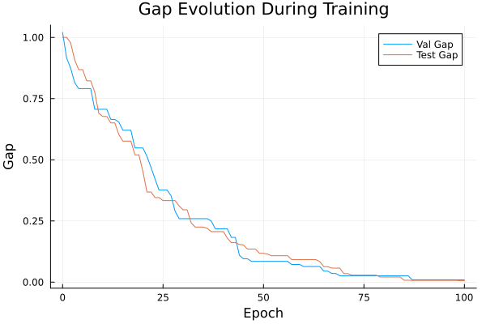
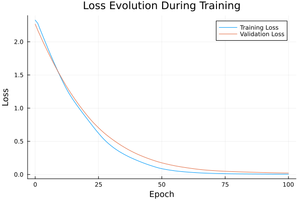

Basic Tutorial: Training with FYL on Argmax Benchmark
This tutorial demonstrates the basic workflow for training a policy using the Perturbed Fenchel-Young Loss algorithm.
Setup
using DecisionFocusedLearningAlgorithms
using DecisionFocusedLearningBenchmarks
using MLUtils: splitobs
using PlotsCreate Benchmark and Data
b = ArgmaxBenchmark()
dataset = generate_dataset(b, 100)
train_data, val_data, test_data = splitobs(dataset; at=(0.3, 0.3, 0.4))(DecisionFocusedLearningBenchmarks.Utils.DataSample{@NamedTuple{}, @NamedTuple{}, Matrix{Float32}, Vector{Float32}, Vector{Float32}}[DataSample(x=Float32[-1.40418 -0.154106 … 0.128025 -0.532561; -0.298718 1.0548 … -1.02999 0.407972; … ; -1.63606 0.100215 … -0.766626 -1.03733; 0.186419 -0.557165 … 1.08493 1.56949], θ=Float32[-0.126664, -0.492156, 2.03082, -0.890783, -0.159114, 0.137621, -1.00895, -0.504656, -1.75487, 0.628562], y=Float32[0.0, 0.0, 1.0, 0.0, 0.0, 0.0, 0.0, 0.0, 0.0, 0.0]), DataSample(x=Float32[0.474463 -0.784107 … 1.21526 1.40751; -0.63724 1.32152 … 0.02443 -0.2973; … ; 0.748941 1.33972 … -0.0952422 -0.945948; 0.0620695 0.252135 … -0.867357 -0.287], θ=Float32[0.75558, -0.0702651, 0.745248, -0.472028, 1.04481, 0.424224, -0.0271677, 1.20636, 1.34971, 0.792649], y=Float32[0.0, 0.0, 0.0, 0.0, 0.0, 0.0, 0.0, 0.0, 1.0, 0.0]), DataSample(x=Float32[-0.922434 0.358854 … -0.366819 0.376686; -0.930762 0.173826 … 1.34213 0.35467; … ; -0.535374 -1.13492 … 1.73653 0.156726; -0.634056 0.672003 … -0.210556 1.40174], θ=Float32[-3.08145, 1.8768, -1.88057, 1.08198, 0.561645, 1.08989, 0.692192, 1.55288, 0.546068, 2.82534], y=Float32[0.0, 0.0, 0.0, 0.0, 0.0, 0.0, 0.0, 0.0, 0.0, 1.0]), DataSample(x=Float32[0.80604 1.33375 … -0.113987 -0.165823; -0.167261 -0.881869 … 2.14481 1.4665; … ; -1.12123 -0.234561 … 0.319709 -0.157736; -1.26646 -1.05744 … 0.864093 0.00474333], θ=Float32[-2.69495, -0.559998, -0.697226, 1.32463, 1.86913, -0.673996, -1.17913, -1.27563, 1.2678, 0.655543], y=Float32[0.0, 0.0, 0.0, 0.0, 1.0, 0.0, 0.0, 0.0, 0.0, 0.0]), DataSample(x=Float32[-1.2676 0.395218 … -1.46821 1.13098; 0.830817 -0.403561 … 0.667373 -0.773962; … ; 1.49577 1.12806 … 1.57503 0.365283; 0.888961 -1.14042 … 0.174575 1.01046], θ=Float32[-0.146923, 0.712617, 3.02678, 1.28639, 2.94536, -0.741682, -0.161274, 2.22178, 0.721764, 1.7226], y=Float32[0.0, 0.0, 1.0, 0.0, 0.0, 0.0, 0.0, 0.0, 0.0, 0.0]), DataSample(x=Float32[1.25964 -0.170701 … 0.177482 0.899789; 3.19145 0.0109348 … -0.367373 -1.66946; … ; -2.79007 -0.205257 … 1.08086 -0.312484; -1.54037 1.73609 … 0.630262 1.16627], θ=Float32[-0.0931313, 0.946097, -1.62336, 0.749729, -0.0958678, 0.424022, -1.67855, -0.491454, -0.485591, 0.842312], y=Float32[0.0, 1.0, 0.0, 0.0, 0.0, 0.0, 0.0, 0.0, 0.0, 0.0]), DataSample(x=Float32[1.21293 -0.773215 … -2.37123 -0.721637; -0.851238 -0.236354 … -1.37758 -0.364047; … ; -0.394803 0.42999 … -1.20198 -1.38291; 0.725719 -0.0480769 … 1.09774 0.714575], θ=Float32[1.00333, -0.324532, -1.19461, 0.286546, 0.859939, -1.88601, -0.377013, -1.41236, -0.56574, 0.900307], y=Float32[1.0, 0.0, 0.0, 0.0, 0.0, 0.0, 0.0, 0.0, 0.0, 0.0]), DataSample(x=Float32[1.31381 0.958722 … -0.178461 -2.43601; 0.576001 0.547795 … 0.356255 0.705503; … ; 0.473691 0.0895986 … 1.00218 2.21843; 1.31451 -0.436099 … -0.0963704 -2.11365], θ=Float32[2.84954, 0.249925, 3.50729, -1.1818, 0.699008, -0.0859321, 0.812317, 0.553988, 1.55422, -0.906889], y=Float32[0.0, 0.0, 1.0, 0.0, 0.0, 0.0, 0.0, 0.0, 0.0, 0.0]), DataSample(x=Float32[-0.260881 -1.6695 … 0.171546 -0.312026; 1.53091 1.77112 … 0.390555 -1.12132; … ; 1.66129 1.16756 … 0.0948882 0.484308; 0.674776 -1.06926 … 1.4661 -1.63009], θ=Float32[0.624495, -0.883054, -0.321309, -1.20231, -0.76484, 0.982412, 0.793948, 0.776306, 2.11748, -0.0710927], y=Float32[0.0, 0.0, 0.0, 0.0, 0.0, 0.0, 0.0, 0.0, 1.0, 0.0]), DataSample(x=Float32[0.200129 0.161605 … 1.25171 0.352703; -0.812291 1.51796 … -0.655834 -1.11893; … ; -0.786518 -1.26122 … -1.30122 0.314866; -1.07885 0.108802 … -1.11574 -0.0105449], θ=Float32[-1.5111, 1.3733, -0.548626, 0.671968, 2.50413, 0.235624, -1.04325, 1.55602, -0.240086, -0.0174958], y=Float32[0.0, 0.0, 0.0, 0.0, 1.0, 0.0, 0.0, 0.0, 0.0, 0.0]) … DataSample(x=Float32[0.585332 0.68538 … 1.34603 0.943291; 0.162526 0.577583 … 1.3419 -0.96928; … ; -1.136 -0.551527 … 0.800262 0.417463; 0.347296 0.343634 … 1.10198 1.021], θ=Float32[0.240556, 0.691047, -0.365191, -0.460487, -0.0419895, -0.0878367, -1.5282, -0.110214, 1.17962, 1.10798], y=Float32[0.0, 0.0, 0.0, 0.0, 0.0, 0.0, 0.0, 0.0, 1.0, 0.0]), DataSample(x=Float32[0.709439 -0.509875 … -1.45316 0.253563; -1.00444 1.5932 … -1.7263 0.267086; … ; 0.0834101 0.160817 … -3.19446 1.52144; 0.139688 -0.493142 … -0.21311 0.998266], θ=Float32[2.25914, -0.302065, 1.21692, -0.619754, 2.88586, 0.616835, 1.63931, 4.14946, -4.19176, 2.22723], y=Float32[0.0, 0.0, 0.0, 0.0, 0.0, 0.0, 0.0, 1.0, 0.0, 0.0]), DataSample(x=Float32[-0.429564 -1.31802 … 1.91054 0.127165; 0.274651 0.256698 … -0.952235 0.223828; … ; -0.603912 -2.04495 … -0.330714 -0.919968; -1.1053 2.00383 … -3.62926 0.517287], θ=Float32[-3.03862, -1.50284, 3.96772, -2.00857, -2.2158, 1.25474, -1.27715, 0.625781, -0.792583, 1.29757], y=Float32[0.0, 0.0, 1.0, 0.0, 0.0, 0.0, 0.0, 0.0, 0.0, 0.0]), DataSample(x=Float32[1.49815 0.400058 … 0.306632 -0.664182; 0.126001 -0.517337 … -0.974093 -0.893005; … ; -0.457458 0.536123 … 1.02202 -0.0703638; 0.589176 1.64465 … -0.843451 1.29624], θ=Float32[0.989726, 1.91213, -2.83535, 0.685805, -0.00246757, 0.0548374, -3.58127, -0.418659, -0.146567, -0.262644], y=Float32[0.0, 1.0, 0.0, 0.0, 0.0, 0.0, 0.0, 0.0, 0.0, 0.0]), DataSample(x=Float32[-0.672693 -0.6153 … -0.560851 1.07309; -0.319298 0.318061 … -0.342133 0.525341; … ; 0.972663 -0.121315 … -0.962355 -0.480163; -0.436044 -1.28954 … -1.33035 1.118], θ=Float32[-1.24124, -1.42151, 0.438213, 0.417186, -3.13312, -2.06473, -0.291491, -0.229298, -1.732, 0.168773], y=Float32[0.0, 0.0, 1.0, 0.0, 0.0, 0.0, 0.0, 0.0, 0.0, 0.0]), DataSample(x=Float32[-2.38767 -0.838956 … 0.140842 1.67641; 0.659549 -0.317235 … 0.671418 -1.0331; … ; -0.18412 0.279925 … 1.90564 -0.816028; 0.100789 -0.201569 … -3.09184 -0.0423601], θ=Float32[-1.36314, -0.248468, -3.72377, -0.501464, 1.22396, 0.368857, 0.258435, 2.4416, -0.53055, 1.19597], y=Float32[0.0, 0.0, 0.0, 0.0, 0.0, 0.0, 0.0, 1.0, 0.0, 0.0]), DataSample(x=Float32[-0.251915 -0.0514778 … -1.32258 -0.265226; 0.940233 -1.5508 … 0.196402 1.36114; … ; -0.63601 0.327989 … -0.782128 0.0278267; 2.03512 0.738189 … 0.648887 -0.0487461], θ=Float32[2.11444, 0.37403, 0.564838, 0.733718, -0.0175921, 1.30314, 0.626657, -1.24908, -0.325082, 1.0142], y=Float32[1.0, 0.0, 0.0, 0.0, 0.0, 0.0, 0.0, 0.0, 0.0, 0.0]), DataSample(x=Float32[-0.12984 0.494753 … 1.47394 -1.0272; 0.602693 -0.0111984 … 0.499561 1.43543; … ; -0.73554 -1.24644 … -0.230279 -0.399416; 2.15058 -1.63989 … 0.188733 -0.255631], θ=Float32[0.469019, -1.12573, -2.33734, 1.73503, -1.99171, -1.76746, 0.138607, -0.0569112, 1.24095, -1.54935], y=Float32[0.0, 0.0, 0.0, 1.0, 0.0, 0.0, 0.0, 0.0, 0.0, 0.0]), DataSample(x=Float32[1.32585 1.44096 … -2.54457 -0.194352; -1.72227 -0.217096 … -0.752584 -1.57501; … ; -0.709361 -1.29044 … -0.806982 1.70651; 0.710528 0.369293 … -1.29935 1.34018], θ=Float32[1.70749, 2.43548, -0.572526, -2.8959, -1.0134, -0.511857, -1.20436, 3.05056, -0.974699, -0.478323], y=Float32[0.0, 0.0, 0.0, 0.0, 0.0, 0.0, 0.0, 1.0, 0.0, 0.0]), DataSample(x=Float32[0.67006 -0.413031 … -0.280908 0.461117; 1.21822 0.308052 … 0.269167 -0.205906; … ; -0.386837 -0.348229 … -2.22717 1.66273; 0.661796 -0.0597907 … 1.62655 -0.244639], θ=Float32[1.11155, -0.783478, 1.05811, 0.2205, 0.157135, 1.17185, 0.838173, 0.684204, -0.134091, 0.855101], y=Float32[0.0, 0.0, 0.0, 0.0, 0.0, 1.0, 0.0, 0.0, 0.0, 0.0])], DecisionFocusedLearningBenchmarks.Utils.DataSample{@NamedTuple{}, @NamedTuple{}, Matrix{Float32}, Vector{Float32}, Vector{Float32}}[DataSample(x=Float32[0.568856 -2.48393 … 0.470988 0.343975; 1.94337 0.586171 … 0.155996 -0.472826; … ; 0.157004 1.25434 … 0.0977823 2.51754; -1.59133 0.114518 … -2.14821 0.75438], θ=Float32[0.689353, -0.321338, -0.12908, 0.59868, -0.955379, 0.577568, -0.553669, 0.0641634, -1.01443, 1.36553], y=Float32[0.0, 0.0, 0.0, 0.0, 0.0, 0.0, 0.0, 0.0, 0.0, 1.0]), DataSample(x=Float32[-0.419261 -0.44946 … -0.387604 -0.00140862; 1.88367 0.0512122 … 1.62886 -0.727906; … ; -1.43631 0.752596 … -0.00988348 -2.04708; -1.11616 0.415444 … 0.836129 -0.207879], θ=Float32[-2.44797, -0.0991884, 1.23351, 0.00933215, -1.19406, 1.55822, 1.31339, -1.39584, 0.40332, -2.26947], y=Float32[0.0, 0.0, 0.0, 0.0, 0.0, 1.0, 0.0, 0.0, 0.0, 0.0]), DataSample(x=Float32[-0.231859 1.50962 … 0.165376 0.0473944; 0.502632 -0.890441 … 1.32866 1.12054; … ; -0.9428 0.537373 … -0.0897398 0.42115; -0.419541 0.344038 … -0.821783 2.5957], θ=Float32[-1.94805, 0.510926, -1.80852, -2.72626, -0.544055, -0.866393, 1.97031, 1.83305, 0.22175, 2.92018], y=Float32[0.0, 0.0, 0.0, 0.0, 0.0, 0.0, 0.0, 0.0, 0.0, 1.0]), DataSample(x=Float32[-1.52769 -0.842784 … -1.09855 1.38089; 1.48573 0.54664 … 0.754383 0.668155; … ; -0.702499 -0.406393 … 0.645282 0.983059; 0.336709 0.296294 … -0.485444 -0.60995], θ=Float32[-0.212037, -0.163605, -1.76366, -1.72498, -1.17875, -0.0527066, 1.4276, -0.177513, 0.0197619, 1.02902], y=Float32[0.0, 0.0, 0.0, 0.0, 0.0, 0.0, 1.0, 0.0, 0.0, 0.0]), DataSample(x=Float32[-1.85236 -1.0371 … 1.11914 0.32324; -0.353572 1.61341 … -0.234558 -1.73217; … ; 0.0339382 1.04177 … -2.02089 -1.2372; -0.467636 1.02581 … -0.0784198 -1.96974], θ=Float32[-4.41175, 1.44886, 1.15765, 0.754382, -0.456669, 2.61511, -0.60274, -2.83494, -0.628486, -3.02392], y=Float32[0.0, 0.0, 0.0, 0.0, 0.0, 1.0, 0.0, 0.0, 0.0, 0.0]), DataSample(x=Float32[0.332987 -1.17061 … -0.102823 0.415647; 1.82372 0.296461 … 0.49056 0.554051; … ; -0.482898 -0.072093 … -2.42314 -1.19223; 0.433902 0.102572 … 0.469634 0.704347], θ=Float32[0.318543, -1.58957, 0.989116, -1.47347, -1.21439, 0.0110126, 0.404909, -0.366566, -0.33242, 1.33986], y=Float32[0.0, 0.0, 0.0, 0.0, 0.0, 0.0, 0.0, 0.0, 0.0, 1.0]), DataSample(x=Float32[-0.518407 0.390803 … 0.409075 -0.742065; 1.09869 0.313747 … -0.340846 1.16272; … ; 0.219293 0.638609 … 2.09693 -0.0533025; -0.0117905 1.49519 … -1.01938 -0.317478], θ=Float32[0.371999, 2.18271, -0.660627, -1.03402, 0.464615, 0.153807, 1.5441, -0.411577, 1.43337, 0.180693], y=Float32[0.0, 1.0, 0.0, 0.0, 0.0, 0.0, 0.0, 0.0, 0.0, 0.0]), DataSample(x=Float32[1.44235 0.47249 … -0.922204 0.413427; 0.316223 -1.11303 … 0.320848 -0.816226; … ; -1.74745 0.312824 … 1.69852 1.28198; -1.60189 0.17426 … -0.22368 1.18877], θ=Float32[1.1961, 0.0218701, -1.52339, 1.66713, -2.15453, -1.29426, -0.500669, 2.27621, -0.156674, -0.0691955], y=Float32[0.0, 0.0, 0.0, 0.0, 0.0, 0.0, 0.0, 1.0, 0.0, 0.0]), DataSample(x=Float32[0.88884 -0.945203 … 1.14622 2.77876; -0.24757 -0.56378 … 0.866387 0.561342; … ; -1.02434 0.627976 … -1.69401 0.70618; -0.447342 0.776079 … -1.07625 1.76296], θ=Float32[0.156444, 0.685499, 0.091786, -0.17231, -0.381981, 1.50744, 0.980656, -1.74064, 0.208717, 3.5467], y=Float32[0.0, 0.0, 0.0, 0.0, 0.0, 0.0, 0.0, 0.0, 0.0, 1.0]), DataSample(x=Float32[-0.195799 0.0157038 … -0.426414 0.523906; -0.613626 -1.2957 … -0.074132 0.0121551; … ; 0.0229804 1.2807 … 0.0971789 1.09816; 0.0293623 -0.71374 … 0.201548 0.393728], θ=Float32[-0.4254, -0.824113, 0.117773, -0.937224, -0.129249, -0.407117, -1.97885, 0.00483113, -0.530164, 2.10347], y=Float32[0.0, 0.0, 0.0, 0.0, 0.0, 0.0, 0.0, 0.0, 0.0, 1.0]) … DataSample(x=Float32[-0.0471474 1.17666 … -0.508275 -0.639464; -0.840803 0.0207534 … 0.400906 0.0972899; … ; 1.31237 0.767961 … -1.04837 -2.47404; 1.60692 -0.599481 … 1.14317 -0.588491], θ=Float32[2.65049, 0.481877, 0.751945, -0.140759, -0.660808, 2.4607, 1.83819, 0.0203607, -2.40395, -2.59052], y=Float32[1.0, 0.0, 0.0, 0.0, 0.0, 0.0, 0.0, 0.0, 0.0, 0.0]), DataSample(x=Float32[-0.531925 1.15882 … 1.04197 0.172389; 0.234063 0.0122082 … 0.498804 -0.330257; … ; -1.02723 0.767169 … -0.500519 -1.47138; -1.68236 -0.824234 … 0.881553 -0.952868], θ=Float32[-1.26189, 2.31596, 0.599548, -0.621684, -1.11311, -0.120566, -0.837954, 2.37, -0.18281, -2.34502], y=Float32[0.0, 0.0, 0.0, 0.0, 0.0, 0.0, 0.0, 1.0, 0.0, 0.0]), DataSample(x=Float32[1.11112 0.0697982 … 1.09726 -0.750419; 1.56463 1.40466 … -1.29751 -0.949971; … ; -0.680085 -1.61172 … -0.861713 -0.674608; 0.598636 1.35177 … -2.07426 -0.191351], θ=Float32[0.723661, 2.18133, 1.79702, -3.02919, -1.52996, -0.840795, 1.00822, -3.02162, -0.0591016, 0.518234], y=Float32[0.0, 1.0, 0.0, 0.0, 0.0, 0.0, 0.0, 0.0, 0.0, 0.0]), DataSample(x=Float32[1.29643 1.38158 … 1.1211 -0.376285; -3.24502 -1.65393 … -0.957484 0.186905; … ; 1.28306 0.582803 … -1.5892 -0.496699; -0.150956 -0.151453 … 1.42962 -0.022359], θ=Float32[1.66679, -0.500815, 2.09373, 0.552449, 1.38109, 0.803366, 0.174407, -0.394592, -0.654133, -0.364367], y=Float32[0.0, 0.0, 1.0, 0.0, 0.0, 0.0, 0.0, 0.0, 0.0, 0.0]), DataSample(x=Float32[-1.14303 0.852764 … -0.429656 -0.388741; -0.140031 -2.01384 … -1.42937 0.703684; … ; 1.34359 0.693022 … -0.52803 -0.733734; -0.615092 -1.62766 … 0.551391 -1.82639], θ=Float32[0.353215, -1.88001, 0.340295, 1.63759, -0.254186, 0.0699158, -0.328784, -1.92174, -1.6684, -0.170759], y=Float32[0.0, 0.0, 0.0, 1.0, 0.0, 0.0, 0.0, 0.0, 0.0, 0.0]), DataSample(x=Float32[0.621758 0.725589 … -1.40763 1.00651; 0.498644 -1.08928 … 0.992506 0.0532806; … ; -1.16106 -1.18226 … -0.849361 -1.53554; 0.498004 -0.245749 … -1.27696 -0.703897], θ=Float32[-0.306278, 0.611479, 2.60231, 0.0913272, 2.85633, 0.772785, 1.44508, 1.41699, -1.49145, -0.545572], y=Float32[0.0, 0.0, 0.0, 0.0, 1.0, 0.0, 0.0, 0.0, 0.0, 0.0]), DataSample(x=Float32[0.0881347 0.791114 … -1.24357 -1.71446; -0.425571 -1.41132 … -0.688986 0.0828058; … ; 0.291577 1.22782 … -0.0996378 -1.29507; -0.0539798 -0.749322 … -0.180631 1.43976], θ=Float32[0.445703, 1.58183, 0.330675, 0.427856, 1.34265, -4.62315, -0.337232, 0.853458, 0.192064, -1.49991], y=Float32[0.0, 1.0, 0.0, 0.0, 0.0, 0.0, 0.0, 0.0, 0.0, 0.0]), DataSample(x=Float32[0.171252 -1.63334 … 0.439452 -0.806696; 0.934669 0.765548 … -0.108622 0.288135; … ; -0.0103364 1.80136 … 1.17658 -0.799378; -2.67152 0.487468 … 0.127244 0.667488], θ=Float32[-1.00401, -0.255793, 0.331953, -1.58206, -1.66303, 0.445622, -2.0622, -0.339853, 0.84756, -0.932888], y=Float32[0.0, 0.0, 0.0, 0.0, 0.0, 0.0, 0.0, 0.0, 1.0, 0.0]), DataSample(x=Float32[-2.44641 0.880695 … -0.902688 -0.454468; -1.25934 -0.49165 … 0.702733 -0.100427; … ; -0.442859 2.56102 … -0.298272 -0.63522; -0.716094 1.36732 … -0.190665 0.903353], θ=Float32[-3.819, 3.58157, -0.528202, 0.423046, -0.116657, 1.48824, 0.819532, 0.602346, -0.698063, 0.0285235], y=Float32[0.0, 1.0, 0.0, 0.0, 0.0, 0.0, 0.0, 0.0, 0.0, 0.0]), DataSample(x=Float32[-0.877732 1.40769 … -1.20233 -0.448234; 0.955993 -0.38699 … 0.47084 -0.247699; … ; 1.1939 -0.697918 … -0.265642 1.23529; -0.183809 0.310852 … -0.603227 0.443108], θ=Float32[0.954949, 1.10942, -1.08684, 3.09608, 0.0487122, -1.27804, 1.86121, 0.862422, -1.46115, 0.0159339], y=Float32[0.0, 0.0, 0.0, 1.0, 0.0, 0.0, 0.0, 0.0, 0.0, 0.0])], DecisionFocusedLearningBenchmarks.Utils.DataSample{@NamedTuple{}, @NamedTuple{}, Matrix{Float32}, Vector{Float32}, Vector{Float32}}[DataSample(x=Float32[0.513024 -0.810186 … 0.584007 -0.0993323; 0.161536 -1.21024 … -1.32453 -1.58398; … ; 0.623324 -0.0187795 … 1.87939 -0.24053; 1.05033 0.339822 … 0.732295 0.638878], θ=Float32[2.06668, -0.0202792, -1.81175, -0.261361, -1.0796, -0.332043, 0.836805, 0.399972, -0.0436982, -0.349519], y=Float32[1.0, 0.0, 0.0, 0.0, 0.0, 0.0, 0.0, 0.0, 0.0, 0.0]), DataSample(x=Float32[-1.50226 0.535209 … -0.00057515 -0.259159; -0.429185 -1.77279 … -0.064841 -1.03255; … ; 0.32369 0.853163 … -0.696196 0.931979; 2.55313 -0.657806 … -1.57014 -0.187358], θ=Float32[-0.192022, 0.203097, 0.145951, 0.722297, -0.828212, 0.61706, 1.9277, 0.703347, -1.9575, 1.42945], y=Float32[0.0, 0.0, 0.0, 0.0, 0.0, 0.0, 1.0, 0.0, 0.0, 0.0]), DataSample(x=Float32[0.120629 -1.04955 … -1.61613 -0.495316; -1.53234 -0.534001 … 1.81685 -0.597241; … ; 0.125153 0.740842 … 1.81452 2.92057; 0.403944 1.66574 … -1.57514 0.062876], θ=Float32[-0.701815, 1.45935, -1.29036, -0.902204, -1.69433, 1.74054, 1.30327, 1.60522, 0.750003, 0.409939], y=Float32[0.0, 0.0, 0.0, 0.0, 0.0, 1.0, 0.0, 0.0, 0.0, 0.0]), DataSample(x=Float32[-1.95687 0.312664 … -0.0257429 0.82062; -0.919944 -0.586737 … -1.19778 -0.263167; … ; -0.863247 0.255047 … 1.6384 0.375782; 0.0182874 0.763515 … -1.27636 0.122943], θ=Float32[-1.40221, -0.389857, 0.000615545, -1.72168, 0.134012, -1.83582, -1.83123, -0.214712, -1.23374, 1.95271], y=Float32[0.0, 0.0, 0.0, 0.0, 0.0, 0.0, 0.0, 0.0, 0.0, 1.0]), DataSample(x=Float32[1.07731 0.558475 … -0.277003 0.593516; -0.0526726 -0.696143 … 0.17222 -1.10543; … ; 1.97822 0.0797546 … -1.99472 0.248519; 0.123855 0.695618 … -1.60612 0.0537901], θ=Float32[1.74106, -0.560836, -4.19332, -0.954828, -1.47836, -0.841968, 0.708498, -1.49982, -2.74266, 0.186429], y=Float32[1.0, 0.0, 0.0, 0.0, 0.0, 0.0, 0.0, 0.0, 0.0, 0.0]), DataSample(x=Float32[-0.0755756 -1.52984 … 0.307139 -0.138594; 0.182521 -0.73112 … 0.460067 -1.07532; … ; 0.564646 0.442251 … -0.0935505 -1.02819; 0.520113 -0.543865 … -0.354903 1.43838], θ=Float32[0.50267, -1.06273, 2.01801, 0.452264, -0.629199, -1.91895, -0.000861141, -0.105249, 2.29117, -0.121753], y=Float32[0.0, 0.0, 0.0, 0.0, 0.0, 0.0, 0.0, 0.0, 1.0, 0.0]), DataSample(x=Float32[0.201978 0.262402 … 1.20836 0.410991; 0.106939 0.474493 … -0.855275 0.99749; … ; -0.268522 1.50372 … 0.9585 0.85982; 0.28944 2.20647 … 2.16798 -1.39696], θ=Float32[-1.8801, 2.28481, 1.29618, 0.244773, 2.12599, -0.186584, 0.740635, -1.57526, 2.33513, 1.63353], y=Float32[0.0, 0.0, 0.0, 0.0, 0.0, 0.0, 0.0, 0.0, 1.0, 0.0]), DataSample(x=Float32[1.22335 0.644263 … -0.252493 -2.30794; 1.97372 -1.02298 … 0.471012 -0.987496; … ; -1.43652 0.608395 … -0.305821 1.99869; -1.18306 -0.996409 … 0.437322 -0.453608], θ=Float32[-0.417345, 0.00688384, 1.46309, -0.0803324, -1.29306, 0.432614, -0.157205, 0.549501, -0.92033, -1.8427], y=Float32[0.0, 0.0, 1.0, 0.0, 0.0, 0.0, 0.0, 0.0, 0.0, 0.0]), DataSample(x=Float32[2.23862 1.07721 … 0.743205 -1.00749; -1.72936 0.907649 … 0.612603 0.290307; … ; 0.742999 0.0589427 … -0.0246906 0.00678317; -1.0137 -0.704535 … -0.344704 0.799369], θ=Float32[0.00788714, 0.419688, -1.43794, -2.30472, -0.888036, -0.14564, 1.56087, -0.409936, 1.5288, 0.68126], y=Float32[0.0, 0.0, 0.0, 0.0, 0.0, 0.0, 1.0, 0.0, 0.0, 0.0]), DataSample(x=Float32[0.302366 0.0172565 … -0.857675 -0.831641; -0.26378 0.384696 … 1.50899 -1.17946; … ; 1.70356 -0.758908 … 1.51255 0.221429; -1.5349 -2.04107 … -0.310941 -0.528932], θ=Float32[-0.463263, -2.66638, 1.77453, -1.36833, -0.456215, 0.664127, -0.956004, -1.38873, 0.893797, -0.991139], y=Float32[0.0, 0.0, 1.0, 0.0, 0.0, 0.0, 0.0, 0.0, 0.0, 0.0]) … DataSample(x=Float32[-2.49819 0.128769 … -0.692993 -0.428976; 0.293211 -0.381846 … 0.633485 -0.510846; … ; -0.000477032 1.19646 … -0.198792 -0.791186; -0.382469 -2.75587 … -0.761739 0.584893], θ=Float32[-1.70658, 0.595653, -0.339778, 0.0708639, -0.0226081, 1.02293, 0.245501, -0.439218, 1.32217, 1.02357], y=Float32[0.0, 0.0, 0.0, 0.0, 0.0, 0.0, 0.0, 0.0, 1.0, 0.0]), DataSample(x=Float32[0.480191 0.575025 … 0.544208 0.292495; -0.365941 -0.666387 … -2.20502 -0.442178; … ; 0.239531 -0.172033 … -0.83182 1.01416; 0.631541 0.173674 … -0.0694272 -1.40922], θ=Float32[-0.274744, -1.04994, 0.021664, 0.297422, 0.704538, -1.32381, 0.177887, -1.42945, 0.305105, -0.42466], y=Float32[0.0, 0.0, 0.0, 0.0, 1.0, 0.0, 0.0, 0.0, 0.0, 0.0]), DataSample(x=Float32[-0.358638 -1.01417 … -0.181816 0.0570505; 0.867296 1.93279 … -0.395227 -0.359173; … ; 1.24889 -1.24215 … -0.95384 -0.25242; 0.0758241 -0.599102 … 0.403179 0.210211], θ=Float32[2.64194, -0.933053, -0.924538, 2.24252, 0.766523, -0.961585, -0.754203, -0.261272, -0.946795, 1.35229], y=Float32[1.0, 0.0, 0.0, 0.0, 0.0, 0.0, 0.0, 0.0, 0.0, 0.0]), DataSample(x=Float32[-0.451515 -0.490483 … -0.820683 -1.43457; -0.44848 -1.31968 … 0.669245 1.299; … ; 0.482861 0.827403 … -0.327613 1.10979; -2.46568 -1.0131 … 0.352383 -1.25398], θ=Float32[0.98178, 0.221423, -0.377626, 1.74599, -0.871099, 1.51266, 2.66133, -0.131783, 0.176195, 0.384136], y=Float32[0.0, 0.0, 0.0, 0.0, 0.0, 0.0, 1.0, 0.0, 0.0, 0.0]), DataSample(x=Float32[-0.889481 1.87718 … -2.70747 -1.26393; -0.858317 -1.12544 … -0.431964 -0.24734; … ; 0.527233 -0.303312 … 0.421422 -0.48854; -0.416031 -1.61662 … 0.531858 0.839077], θ=Float32[0.41352, 1.482, 1.58713, 0.722768, -1.43998, -3.30353, 0.961447, 1.95357, -0.287497, -0.566484], y=Float32[0.0, 0.0, 0.0, 0.0, 0.0, 0.0, 0.0, 1.0, 0.0, 0.0]), DataSample(x=Float32[-0.746212 -0.513075 … 0.423448 -0.130566; 0.699243 -1.50746 … -0.055655 -1.35969; … ; 0.197038 0.178369 … 0.832138 -0.320609; -0.145394 -1.14077 … -0.47238 0.340024], θ=Float32[1.3512, -2.21734, 2.05987, -1.54759, 0.293862, 0.64162, 2.6132, -1.221, 0.214281, -0.133624], y=Float32[0.0, 0.0, 0.0, 0.0, 0.0, 0.0, 1.0, 0.0, 0.0, 0.0]), DataSample(x=Float32[-0.821106 -0.080979 … -1.17519 -1.4268; -0.40337 -0.29709 … 0.0806194 1.92411; … ; -1.01968 -1.92047 … 1.20699 -0.173935; -1.46504 0.653294 … 0.702581 1.10503], θ=Float32[-2.00451, -0.380077, 0.648666, 0.823488, -3.96988, -1.36639, -1.69917, -1.27573, 1.75607, -0.236979], y=Float32[0.0, 0.0, 0.0, 0.0, 0.0, 0.0, 0.0, 0.0, 1.0, 0.0]), DataSample(x=Float32[-1.03078 -0.346914 … 0.696316 -0.732504; -0.659051 -1.05227 … 0.940055 0.958892; … ; 0.193553 -0.708127 … -0.101771 -0.221675; 1.80109 -2.03287 … 1.38033 -0.777454], θ=Float32[-0.945135, -2.31953, 1.038, -2.09452, -0.370337, -0.15802, 0.0254933, -0.557514, -0.0279351, 0.976305], y=Float32[0.0, 0.0, 1.0, 0.0, 0.0, 0.0, 0.0, 0.0, 0.0, 0.0]), DataSample(x=Float32[0.107549 0.582244 … 1.25104 0.295797; 0.794415 1.3136 … 0.133117 -0.0626681; … ; -0.581831 1.12457 … -0.477791 -0.513449; 1.18022 -0.821736 … 0.513767 -0.737529], θ=Float32[2.75575, 0.0815555, 1.04123, 0.279564, 0.219947, 0.874848, -1.25383, 0.570379, -0.470518, -0.0917808], y=Float32[1.0, 0.0, 0.0, 0.0, 0.0, 0.0, 0.0, 0.0, 0.0, 0.0]), DataSample(x=Float32[-0.750127 0.787725 … 0.327858 2.0078; 0.430431 -0.810565 … -0.262046 -0.496469; … ; 0.0466275 -1.75834 … -0.280837 0.44705; -0.194626 -2.01188 … 2.75484 -0.785291], θ=Float32[-1.05988, -1.5946, -0.858768, -0.224287, 0.132554, 1.66767, 0.455086, 0.370352, 2.27033, 1.59323], y=Float32[0.0, 0.0, 0.0, 0.0, 0.0, 0.0, 0.0, 0.0, 1.0, 0.0])], DecisionFocusedLearningBenchmarks.Utils.DataSample{@NamedTuple{}, @NamedTuple{}, Matrix{Float32}, Vector{Float32}, Vector{Float32}}[])Create Policy
model = generate_statistical_model(b; seed=0)
maximizer = generate_maximizer(b)
policy = DFLPolicy(model, maximizer)DFLPolicy{Flux.Chain{Tuple{Flux.Dense{typeof(identity), Matrix{Float32}, Bool}, typeof(vec)}}, typeof(DecisionFocusedLearningBenchmarks.Argmax.one_hot_argmax)}(Chain(Dense(5 => 1; bias=false), vec), DecisionFocusedLearningBenchmarks.Argmax.one_hot_argmax)Configure Algorithm
algorithm = PerturbedFenchelYoungLossImitation(;
nb_samples=10, ε=0.1, threaded=true, seed=0
)PerturbedFenchelYoungLossImitation{Optimisers.Adam{Float64, Tuple{Float64, Float64}, Float64}, Int64}(10, 0.1, true, Optimisers.Adam(eta=0.001, beta=(0.9, 0.999), epsilon=1.0e-8), 0, false)Define Metrics to track during training
validation_loss_metric = FYLLossMetric(val_data, :validation_loss)
val_gap_metric = FunctionMetric(:val_gap, val_data) do ctx, data
return compute_gap(b, data, ctx.policy.statistical_model, ctx.policy.maximizer)
end
test_gap_metric = FunctionMetric(:test_gap, test_data) do ctx, data
return compute_gap(b, data, ctx.policy.statistical_model, ctx.policy.maximizer)
end
metrics = (validation_loss_metric, val_gap_metric, test_gap_metric)(FYLLossMetric{SubArray{DecisionFocusedLearningBenchmarks.Utils.DataSample{@NamedTuple{}, @NamedTuple{}, Matrix{Float32}, Vector{Float32}, Vector{Float32}}, 1, Vector{DecisionFocusedLearningBenchmarks.Utils.DataSample{@NamedTuple{}, @NamedTuple{}, Matrix{Float32}, Vector{Float32}, Vector{Float32}}}, Tuple{UnitRange{Int64}}, true}}(DecisionFocusedLearningBenchmarks.Utils.DataSample{@NamedTuple{}, @NamedTuple{}, Matrix{Float32}, Vector{Float32}, Vector{Float32}}[DataSample(x=Float32[0.568856 -2.48393 … 0.470988 0.343975; 1.94337 0.586171 … 0.155996 -0.472826; … ; 0.157004 1.25434 … 0.0977823 2.51754; -1.59133 0.114518 … -2.14821 0.75438], θ=Float32[0.689353, -0.321338, -0.12908, 0.59868, -0.955379, 0.577568, -0.553669, 0.0641634, -1.01443, 1.36553], y=Float32[0.0, 0.0, 0.0, 0.0, 0.0, 0.0, 0.0, 0.0, 0.0, 1.0]), DataSample(x=Float32[-0.419261 -0.44946 … -0.387604 -0.00140862; 1.88367 0.0512122 … 1.62886 -0.727906; … ; -1.43631 0.752596 … -0.00988348 -2.04708; -1.11616 0.415444 … 0.836129 -0.207879], θ=Float32[-2.44797, -0.0991884, 1.23351, 0.00933215, -1.19406, 1.55822, 1.31339, -1.39584, 0.40332, -2.26947], y=Float32[0.0, 0.0, 0.0, 0.0, 0.0, 1.0, 0.0, 0.0, 0.0, 0.0]), DataSample(x=Float32[-0.231859 1.50962 … 0.165376 0.0473944; 0.502632 -0.890441 … 1.32866 1.12054; … ; -0.9428 0.537373 … -0.0897398 0.42115; -0.419541 0.344038 … -0.821783 2.5957], θ=Float32[-1.94805, 0.510926, -1.80852, -2.72626, -0.544055, -0.866393, 1.97031, 1.83305, 0.22175, 2.92018], y=Float32[0.0, 0.0, 0.0, 0.0, 0.0, 0.0, 0.0, 0.0, 0.0, 1.0]), DataSample(x=Float32[-1.52769 -0.842784 … -1.09855 1.38089; 1.48573 0.54664 … 0.754383 0.668155; … ; -0.702499 -0.406393 … 0.645282 0.983059; 0.336709 0.296294 … -0.485444 -0.60995], θ=Float32[-0.212037, -0.163605, -1.76366, -1.72498, -1.17875, -0.0527066, 1.4276, -0.177513, 0.0197619, 1.02902], y=Float32[0.0, 0.0, 0.0, 0.0, 0.0, 0.0, 1.0, 0.0, 0.0, 0.0]), DataSample(x=Float32[-1.85236 -1.0371 … 1.11914 0.32324; -0.353572 1.61341 … -0.234558 -1.73217; … ; 0.0339382 1.04177 … -2.02089 -1.2372; -0.467636 1.02581 … -0.0784198 -1.96974], θ=Float32[-4.41175, 1.44886, 1.15765, 0.754382, -0.456669, 2.61511, -0.60274, -2.83494, -0.628486, -3.02392], y=Float32[0.0, 0.0, 0.0, 0.0, 0.0, 1.0, 0.0, 0.0, 0.0, 0.0]), DataSample(x=Float32[0.332987 -1.17061 … -0.102823 0.415647; 1.82372 0.296461 … 0.49056 0.554051; … ; -0.482898 -0.072093 … -2.42314 -1.19223; 0.433902 0.102572 … 0.469634 0.704347], θ=Float32[0.318543, -1.58957, 0.989116, -1.47347, -1.21439, 0.0110126, 0.404909, -0.366566, -0.33242, 1.33986], y=Float32[0.0, 0.0, 0.0, 0.0, 0.0, 0.0, 0.0, 0.0, 0.0, 1.0]), DataSample(x=Float32[-0.518407 0.390803 … 0.409075 -0.742065; 1.09869 0.313747 … -0.340846 1.16272; … ; 0.219293 0.638609 … 2.09693 -0.0533025; -0.0117905 1.49519 … -1.01938 -0.317478], θ=Float32[0.371999, 2.18271, -0.660627, -1.03402, 0.464615, 0.153807, 1.5441, -0.411577, 1.43337, 0.180693], y=Float32[0.0, 1.0, 0.0, 0.0, 0.0, 0.0, 0.0, 0.0, 0.0, 0.0]), DataSample(x=Float32[1.44235 0.47249 … -0.922204 0.413427; 0.316223 -1.11303 … 0.320848 -0.816226; … ; -1.74745 0.312824 … 1.69852 1.28198; -1.60189 0.17426 … -0.22368 1.18877], θ=Float32[1.1961, 0.0218701, -1.52339, 1.66713, -2.15453, -1.29426, -0.500669, 2.27621, -0.156674, -0.0691955], y=Float32[0.0, 0.0, 0.0, 0.0, 0.0, 0.0, 0.0, 1.0, 0.0, 0.0]), DataSample(x=Float32[0.88884 -0.945203 … 1.14622 2.77876; -0.24757 -0.56378 … 0.866387 0.561342; … ; -1.02434 0.627976 … -1.69401 0.70618; -0.447342 0.776079 … -1.07625 1.76296], θ=Float32[0.156444, 0.685499, 0.091786, -0.17231, -0.381981, 1.50744, 0.980656, -1.74064, 0.208717, 3.5467], y=Float32[0.0, 0.0, 0.0, 0.0, 0.0, 0.0, 0.0, 0.0, 0.0, 1.0]), DataSample(x=Float32[-0.195799 0.0157038 … -0.426414 0.523906; -0.613626 -1.2957 … -0.074132 0.0121551; … ; 0.0229804 1.2807 … 0.0971789 1.09816; 0.0293623 -0.71374 … 0.201548 0.393728], θ=Float32[-0.4254, -0.824113, 0.117773, -0.937224, -0.129249, -0.407117, -1.97885, 0.00483113, -0.530164, 2.10347], y=Float32[0.0, 0.0, 0.0, 0.0, 0.0, 0.0, 0.0, 0.0, 0.0, 1.0]) … DataSample(x=Float32[-0.0471474 1.17666 … -0.508275 -0.639464; -0.840803 0.0207534 … 0.400906 0.0972899; … ; 1.31237 0.767961 … -1.04837 -2.47404; 1.60692 -0.599481 … 1.14317 -0.588491], θ=Float32[2.65049, 0.481877, 0.751945, -0.140759, -0.660808, 2.4607, 1.83819, 0.0203607, -2.40395, -2.59052], y=Float32[1.0, 0.0, 0.0, 0.0, 0.0, 0.0, 0.0, 0.0, 0.0, 0.0]), DataSample(x=Float32[-0.531925 1.15882 … 1.04197 0.172389; 0.234063 0.0122082 … 0.498804 -0.330257; … ; -1.02723 0.767169 … -0.500519 -1.47138; -1.68236 -0.824234 … 0.881553 -0.952868], θ=Float32[-1.26189, 2.31596, 0.599548, -0.621684, -1.11311, -0.120566, -0.837954, 2.37, -0.18281, -2.34502], y=Float32[0.0, 0.0, 0.0, 0.0, 0.0, 0.0, 0.0, 1.0, 0.0, 0.0]), DataSample(x=Float32[1.11112 0.0697982 … 1.09726 -0.750419; 1.56463 1.40466 … -1.29751 -0.949971; … ; -0.680085 -1.61172 … -0.861713 -0.674608; 0.598636 1.35177 … -2.07426 -0.191351], θ=Float32[0.723661, 2.18133, 1.79702, -3.02919, -1.52996, -0.840795, 1.00822, -3.02162, -0.0591016, 0.518234], y=Float32[0.0, 1.0, 0.0, 0.0, 0.0, 0.0, 0.0, 0.0, 0.0, 0.0]), DataSample(x=Float32[1.29643 1.38158 … 1.1211 -0.376285; -3.24502 -1.65393 … -0.957484 0.186905; … ; 1.28306 0.582803 … -1.5892 -0.496699; -0.150956 -0.151453 … 1.42962 -0.022359], θ=Float32[1.66679, -0.500815, 2.09373, 0.552449, 1.38109, 0.803366, 0.174407, -0.394592, -0.654133, -0.364367], y=Float32[0.0, 0.0, 1.0, 0.0, 0.0, 0.0, 0.0, 0.0, 0.0, 0.0]), DataSample(x=Float32[-1.14303 0.852764 … -0.429656 -0.388741; -0.140031 -2.01384 … -1.42937 0.703684; … ; 1.34359 0.693022 … -0.52803 -0.733734; -0.615092 -1.62766 … 0.551391 -1.82639], θ=Float32[0.353215, -1.88001, 0.340295, 1.63759, -0.254186, 0.0699158, -0.328784, -1.92174, -1.6684, -0.170759], y=Float32[0.0, 0.0, 0.0, 1.0, 0.0, 0.0, 0.0, 0.0, 0.0, 0.0]), DataSample(x=Float32[0.621758 0.725589 … -1.40763 1.00651; 0.498644 -1.08928 … 0.992506 0.0532806; … ; -1.16106 -1.18226 … -0.849361 -1.53554; 0.498004 -0.245749 … -1.27696 -0.703897], θ=Float32[-0.306278, 0.611479, 2.60231, 0.0913272, 2.85633, 0.772785, 1.44508, 1.41699, -1.49145, -0.545572], y=Float32[0.0, 0.0, 0.0, 0.0, 1.0, 0.0, 0.0, 0.0, 0.0, 0.0]), DataSample(x=Float32[0.0881347 0.791114 … -1.24357 -1.71446; -0.425571 -1.41132 … -0.688986 0.0828058; … ; 0.291577 1.22782 … -0.0996378 -1.29507; -0.0539798 -0.749322 … -0.180631 1.43976], θ=Float32[0.445703, 1.58183, 0.330675, 0.427856, 1.34265, -4.62315, -0.337232, 0.853458, 0.192064, -1.49991], y=Float32[0.0, 1.0, 0.0, 0.0, 0.0, 0.0, 0.0, 0.0, 0.0, 0.0]), DataSample(x=Float32[0.171252 -1.63334 … 0.439452 -0.806696; 0.934669 0.765548 … -0.108622 0.288135; … ; -0.0103364 1.80136 … 1.17658 -0.799378; -2.67152 0.487468 … 0.127244 0.667488], θ=Float32[-1.00401, -0.255793, 0.331953, -1.58206, -1.66303, 0.445622, -2.0622, -0.339853, 0.84756, -0.932888], y=Float32[0.0, 0.0, 0.0, 0.0, 0.0, 0.0, 0.0, 0.0, 1.0, 0.0]), DataSample(x=Float32[-2.44641 0.880695 … -0.902688 -0.454468; -1.25934 -0.49165 … 0.702733 -0.100427; … ; -0.442859 2.56102 … -0.298272 -0.63522; -0.716094 1.36732 … -0.190665 0.903353], θ=Float32[-3.819, 3.58157, -0.528202, 0.423046, -0.116657, 1.48824, 0.819532, 0.602346, -0.698063, 0.0285235], y=Float32[0.0, 1.0, 0.0, 0.0, 0.0, 0.0, 0.0, 0.0, 0.0, 0.0]), DataSample(x=Float32[-0.877732 1.40769 … -1.20233 -0.448234; 0.955993 -0.38699 … 0.47084 -0.247699; … ; 1.1939 -0.697918 … -0.265642 1.23529; -0.183809 0.310852 … -0.603227 0.443108], θ=Float32[0.954949, 1.10942, -1.08684, 3.09608, 0.0487122, -1.27804, 1.86121, 0.862422, -1.46115, 0.0159339], y=Float32[0.0, 0.0, 0.0, 1.0, 0.0, 0.0, 0.0, 0.0, 0.0, 0.0])], LossAccumulator(:validation_loss, 0.0, 0)), FunctionMetric{Main.var"#2#3", SubArray{DecisionFocusedLearningBenchmarks.Utils.DataSample{@NamedTuple{}, @NamedTuple{}, Matrix{Float32}, Vector{Float32}, Vector{Float32}}, 1, Vector{DecisionFocusedLearningBenchmarks.Utils.DataSample{@NamedTuple{}, @NamedTuple{}, Matrix{Float32}, Vector{Float32}, Vector{Float32}}}, Tuple{UnitRange{Int64}}, true}}(Main.var"#2#3"(), :val_gap, DecisionFocusedLearningBenchmarks.Utils.DataSample{@NamedTuple{}, @NamedTuple{}, Matrix{Float32}, Vector{Float32}, Vector{Float32}}[DataSample(x=Float32[0.568856 -2.48393 … 0.470988 0.343975; 1.94337 0.586171 … 0.155996 -0.472826; … ; 0.157004 1.25434 … 0.0977823 2.51754; -1.59133 0.114518 … -2.14821 0.75438], θ=Float32[0.689353, -0.321338, -0.12908, 0.59868, -0.955379, 0.577568, -0.553669, 0.0641634, -1.01443, 1.36553], y=Float32[0.0, 0.0, 0.0, 0.0, 0.0, 0.0, 0.0, 0.0, 0.0, 1.0]), DataSample(x=Float32[-0.419261 -0.44946 … -0.387604 -0.00140862; 1.88367 0.0512122 … 1.62886 -0.727906; … ; -1.43631 0.752596 … -0.00988348 -2.04708; -1.11616 0.415444 … 0.836129 -0.207879], θ=Float32[-2.44797, -0.0991884, 1.23351, 0.00933215, -1.19406, 1.55822, 1.31339, -1.39584, 0.40332, -2.26947], y=Float32[0.0, 0.0, 0.0, 0.0, 0.0, 1.0, 0.0, 0.0, 0.0, 0.0]), DataSample(x=Float32[-0.231859 1.50962 … 0.165376 0.0473944; 0.502632 -0.890441 … 1.32866 1.12054; … ; -0.9428 0.537373 … -0.0897398 0.42115; -0.419541 0.344038 … -0.821783 2.5957], θ=Float32[-1.94805, 0.510926, -1.80852, -2.72626, -0.544055, -0.866393, 1.97031, 1.83305, 0.22175, 2.92018], y=Float32[0.0, 0.0, 0.0, 0.0, 0.0, 0.0, 0.0, 0.0, 0.0, 1.0]), DataSample(x=Float32[-1.52769 -0.842784 … -1.09855 1.38089; 1.48573 0.54664 … 0.754383 0.668155; … ; -0.702499 -0.406393 … 0.645282 0.983059; 0.336709 0.296294 … -0.485444 -0.60995], θ=Float32[-0.212037, -0.163605, -1.76366, -1.72498, -1.17875, -0.0527066, 1.4276, -0.177513, 0.0197619, 1.02902], y=Float32[0.0, 0.0, 0.0, 0.0, 0.0, 0.0, 1.0, 0.0, 0.0, 0.0]), DataSample(x=Float32[-1.85236 -1.0371 … 1.11914 0.32324; -0.353572 1.61341 … -0.234558 -1.73217; … ; 0.0339382 1.04177 … -2.02089 -1.2372; -0.467636 1.02581 … -0.0784198 -1.96974], θ=Float32[-4.41175, 1.44886, 1.15765, 0.754382, -0.456669, 2.61511, -0.60274, -2.83494, -0.628486, -3.02392], y=Float32[0.0, 0.0, 0.0, 0.0, 0.0, 1.0, 0.0, 0.0, 0.0, 0.0]), DataSample(x=Float32[0.332987 -1.17061 … -0.102823 0.415647; 1.82372 0.296461 … 0.49056 0.554051; … ; -0.482898 -0.072093 … -2.42314 -1.19223; 0.433902 0.102572 … 0.469634 0.704347], θ=Float32[0.318543, -1.58957, 0.989116, -1.47347, -1.21439, 0.0110126, 0.404909, -0.366566, -0.33242, 1.33986], y=Float32[0.0, 0.0, 0.0, 0.0, 0.0, 0.0, 0.0, 0.0, 0.0, 1.0]), DataSample(x=Float32[-0.518407 0.390803 … 0.409075 -0.742065; 1.09869 0.313747 … -0.340846 1.16272; … ; 0.219293 0.638609 … 2.09693 -0.0533025; -0.0117905 1.49519 … -1.01938 -0.317478], θ=Float32[0.371999, 2.18271, -0.660627, -1.03402, 0.464615, 0.153807, 1.5441, -0.411577, 1.43337, 0.180693], y=Float32[0.0, 1.0, 0.0, 0.0, 0.0, 0.0, 0.0, 0.0, 0.0, 0.0]), DataSample(x=Float32[1.44235 0.47249 … -0.922204 0.413427; 0.316223 -1.11303 … 0.320848 -0.816226; … ; -1.74745 0.312824 … 1.69852 1.28198; -1.60189 0.17426 … -0.22368 1.18877], θ=Float32[1.1961, 0.0218701, -1.52339, 1.66713, -2.15453, -1.29426, -0.500669, 2.27621, -0.156674, -0.0691955], y=Float32[0.0, 0.0, 0.0, 0.0, 0.0, 0.0, 0.0, 1.0, 0.0, 0.0]), DataSample(x=Float32[0.88884 -0.945203 … 1.14622 2.77876; -0.24757 -0.56378 … 0.866387 0.561342; … ; -1.02434 0.627976 … -1.69401 0.70618; -0.447342 0.776079 … -1.07625 1.76296], θ=Float32[0.156444, 0.685499, 0.091786, -0.17231, -0.381981, 1.50744, 0.980656, -1.74064, 0.208717, 3.5467], y=Float32[0.0, 0.0, 0.0, 0.0, 0.0, 0.0, 0.0, 0.0, 0.0, 1.0]), DataSample(x=Float32[-0.195799 0.0157038 … -0.426414 0.523906; -0.613626 -1.2957 … -0.074132 0.0121551; … ; 0.0229804 1.2807 … 0.0971789 1.09816; 0.0293623 -0.71374 … 0.201548 0.393728], θ=Float32[-0.4254, -0.824113, 0.117773, -0.937224, -0.129249, -0.407117, -1.97885, 0.00483113, -0.530164, 2.10347], y=Float32[0.0, 0.0, 0.0, 0.0, 0.0, 0.0, 0.0, 0.0, 0.0, 1.0]) … DataSample(x=Float32[-0.0471474 1.17666 … -0.508275 -0.639464; -0.840803 0.0207534 … 0.400906 0.0972899; … ; 1.31237 0.767961 … -1.04837 -2.47404; 1.60692 -0.599481 … 1.14317 -0.588491], θ=Float32[2.65049, 0.481877, 0.751945, -0.140759, -0.660808, 2.4607, 1.83819, 0.0203607, -2.40395, -2.59052], y=Float32[1.0, 0.0, 0.0, 0.0, 0.0, 0.0, 0.0, 0.0, 0.0, 0.0]), DataSample(x=Float32[-0.531925 1.15882 … 1.04197 0.172389; 0.234063 0.0122082 … 0.498804 -0.330257; … ; -1.02723 0.767169 … -0.500519 -1.47138; -1.68236 -0.824234 … 0.881553 -0.952868], θ=Float32[-1.26189, 2.31596, 0.599548, -0.621684, -1.11311, -0.120566, -0.837954, 2.37, -0.18281, -2.34502], y=Float32[0.0, 0.0, 0.0, 0.0, 0.0, 0.0, 0.0, 1.0, 0.0, 0.0]), DataSample(x=Float32[1.11112 0.0697982 … 1.09726 -0.750419; 1.56463 1.40466 … -1.29751 -0.949971; … ; -0.680085 -1.61172 … -0.861713 -0.674608; 0.598636 1.35177 … -2.07426 -0.191351], θ=Float32[0.723661, 2.18133, 1.79702, -3.02919, -1.52996, -0.840795, 1.00822, -3.02162, -0.0591016, 0.518234], y=Float32[0.0, 1.0, 0.0, 0.0, 0.0, 0.0, 0.0, 0.0, 0.0, 0.0]), DataSample(x=Float32[1.29643 1.38158 … 1.1211 -0.376285; -3.24502 -1.65393 … -0.957484 0.186905; … ; 1.28306 0.582803 … -1.5892 -0.496699; -0.150956 -0.151453 … 1.42962 -0.022359], θ=Float32[1.66679, -0.500815, 2.09373, 0.552449, 1.38109, 0.803366, 0.174407, -0.394592, -0.654133, -0.364367], y=Float32[0.0, 0.0, 1.0, 0.0, 0.0, 0.0, 0.0, 0.0, 0.0, 0.0]), DataSample(x=Float32[-1.14303 0.852764 … -0.429656 -0.388741; -0.140031 -2.01384 … -1.42937 0.703684; … ; 1.34359 0.693022 … -0.52803 -0.733734; -0.615092 -1.62766 … 0.551391 -1.82639], θ=Float32[0.353215, -1.88001, 0.340295, 1.63759, -0.254186, 0.0699158, -0.328784, -1.92174, -1.6684, -0.170759], y=Float32[0.0, 0.0, 0.0, 1.0, 0.0, 0.0, 0.0, 0.0, 0.0, 0.0]), DataSample(x=Float32[0.621758 0.725589 … -1.40763 1.00651; 0.498644 -1.08928 … 0.992506 0.0532806; … ; -1.16106 -1.18226 … -0.849361 -1.53554; 0.498004 -0.245749 … -1.27696 -0.703897], θ=Float32[-0.306278, 0.611479, 2.60231, 0.0913272, 2.85633, 0.772785, 1.44508, 1.41699, -1.49145, -0.545572], y=Float32[0.0, 0.0, 0.0, 0.0, 1.0, 0.0, 0.0, 0.0, 0.0, 0.0]), DataSample(x=Float32[0.0881347 0.791114 … -1.24357 -1.71446; -0.425571 -1.41132 … -0.688986 0.0828058; … ; 0.291577 1.22782 … -0.0996378 -1.29507; -0.0539798 -0.749322 … -0.180631 1.43976], θ=Float32[0.445703, 1.58183, 0.330675, 0.427856, 1.34265, -4.62315, -0.337232, 0.853458, 0.192064, -1.49991], y=Float32[0.0, 1.0, 0.0, 0.0, 0.0, 0.0, 0.0, 0.0, 0.0, 0.0]), DataSample(x=Float32[0.171252 -1.63334 … 0.439452 -0.806696; 0.934669 0.765548 … -0.108622 0.288135; … ; -0.0103364 1.80136 … 1.17658 -0.799378; -2.67152 0.487468 … 0.127244 0.667488], θ=Float32[-1.00401, -0.255793, 0.331953, -1.58206, -1.66303, 0.445622, -2.0622, -0.339853, 0.84756, -0.932888], y=Float32[0.0, 0.0, 0.0, 0.0, 0.0, 0.0, 0.0, 0.0, 1.0, 0.0]), DataSample(x=Float32[-2.44641 0.880695 … -0.902688 -0.454468; -1.25934 -0.49165 … 0.702733 -0.100427; … ; -0.442859 2.56102 … -0.298272 -0.63522; -0.716094 1.36732 … -0.190665 0.903353], θ=Float32[-3.819, 3.58157, -0.528202, 0.423046, -0.116657, 1.48824, 0.819532, 0.602346, -0.698063, 0.0285235], y=Float32[0.0, 1.0, 0.0, 0.0, 0.0, 0.0, 0.0, 0.0, 0.0, 0.0]), DataSample(x=Float32[-0.877732 1.40769 … -1.20233 -0.448234; 0.955993 -0.38699 … 0.47084 -0.247699; … ; 1.1939 -0.697918 … -0.265642 1.23529; -0.183809 0.310852 … -0.603227 0.443108], θ=Float32[0.954949, 1.10942, -1.08684, 3.09608, 0.0487122, -1.27804, 1.86121, 0.862422, -1.46115, 0.0159339], y=Float32[0.0, 0.0, 0.0, 1.0, 0.0, 0.0, 0.0, 0.0, 0.0, 0.0])]), FunctionMetric{Main.var"#5#6", SubArray{DecisionFocusedLearningBenchmarks.Utils.DataSample{@NamedTuple{}, @NamedTuple{}, Matrix{Float32}, Vector{Float32}, Vector{Float32}}, 1, Vector{DecisionFocusedLearningBenchmarks.Utils.DataSample{@NamedTuple{}, @NamedTuple{}, Matrix{Float32}, Vector{Float32}, Vector{Float32}}}, Tuple{UnitRange{Int64}}, true}}(Main.var"#5#6"(), :test_gap, DecisionFocusedLearningBenchmarks.Utils.DataSample{@NamedTuple{}, @NamedTuple{}, Matrix{Float32}, Vector{Float32}, Vector{Float32}}[DataSample(x=Float32[0.513024 -0.810186 … 0.584007 -0.0993323; 0.161536 -1.21024 … -1.32453 -1.58398; … ; 0.623324 -0.0187795 … 1.87939 -0.24053; 1.05033 0.339822 … 0.732295 0.638878], θ=Float32[2.06668, -0.0202792, -1.81175, -0.261361, -1.0796, -0.332043, 0.836805, 0.399972, -0.0436982, -0.349519], y=Float32[1.0, 0.0, 0.0, 0.0, 0.0, 0.0, 0.0, 0.0, 0.0, 0.0]), DataSample(x=Float32[-1.50226 0.535209 … -0.00057515 -0.259159; -0.429185 -1.77279 … -0.064841 -1.03255; … ; 0.32369 0.853163 … -0.696196 0.931979; 2.55313 -0.657806 … -1.57014 -0.187358], θ=Float32[-0.192022, 0.203097, 0.145951, 0.722297, -0.828212, 0.61706, 1.9277, 0.703347, -1.9575, 1.42945], y=Float32[0.0, 0.0, 0.0, 0.0, 0.0, 0.0, 1.0, 0.0, 0.0, 0.0]), DataSample(x=Float32[0.120629 -1.04955 … -1.61613 -0.495316; -1.53234 -0.534001 … 1.81685 -0.597241; … ; 0.125153 0.740842 … 1.81452 2.92057; 0.403944 1.66574 … -1.57514 0.062876], θ=Float32[-0.701815, 1.45935, -1.29036, -0.902204, -1.69433, 1.74054, 1.30327, 1.60522, 0.750003, 0.409939], y=Float32[0.0, 0.0, 0.0, 0.0, 0.0, 1.0, 0.0, 0.0, 0.0, 0.0]), DataSample(x=Float32[-1.95687 0.312664 … -0.0257429 0.82062; -0.919944 -0.586737 … -1.19778 -0.263167; … ; -0.863247 0.255047 … 1.6384 0.375782; 0.0182874 0.763515 … -1.27636 0.122943], θ=Float32[-1.40221, -0.389857, 0.000615545, -1.72168, 0.134012, -1.83582, -1.83123, -0.214712, -1.23374, 1.95271], y=Float32[0.0, 0.0, 0.0, 0.0, 0.0, 0.0, 0.0, 0.0, 0.0, 1.0]), DataSample(x=Float32[1.07731 0.558475 … -0.277003 0.593516; -0.0526726 -0.696143 … 0.17222 -1.10543; … ; 1.97822 0.0797546 … -1.99472 0.248519; 0.123855 0.695618 … -1.60612 0.0537901], θ=Float32[1.74106, -0.560836, -4.19332, -0.954828, -1.47836, -0.841968, 0.708498, -1.49982, -2.74266, 0.186429], y=Float32[1.0, 0.0, 0.0, 0.0, 0.0, 0.0, 0.0, 0.0, 0.0, 0.0]), DataSample(x=Float32[-0.0755756 -1.52984 … 0.307139 -0.138594; 0.182521 -0.73112 … 0.460067 -1.07532; … ; 0.564646 0.442251 … -0.0935505 -1.02819; 0.520113 -0.543865 … -0.354903 1.43838], θ=Float32[0.50267, -1.06273, 2.01801, 0.452264, -0.629199, -1.91895, -0.000861141, -0.105249, 2.29117, -0.121753], y=Float32[0.0, 0.0, 0.0, 0.0, 0.0, 0.0, 0.0, 0.0, 1.0, 0.0]), DataSample(x=Float32[0.201978 0.262402 … 1.20836 0.410991; 0.106939 0.474493 … -0.855275 0.99749; … ; -0.268522 1.50372 … 0.9585 0.85982; 0.28944 2.20647 … 2.16798 -1.39696], θ=Float32[-1.8801, 2.28481, 1.29618, 0.244773, 2.12599, -0.186584, 0.740635, -1.57526, 2.33513, 1.63353], y=Float32[0.0, 0.0, 0.0, 0.0, 0.0, 0.0, 0.0, 0.0, 1.0, 0.0]), DataSample(x=Float32[1.22335 0.644263 … -0.252493 -2.30794; 1.97372 -1.02298 … 0.471012 -0.987496; … ; -1.43652 0.608395 … -0.305821 1.99869; -1.18306 -0.996409 … 0.437322 -0.453608], θ=Float32[-0.417345, 0.00688384, 1.46309, -0.0803324, -1.29306, 0.432614, -0.157205, 0.549501, -0.92033, -1.8427], y=Float32[0.0, 0.0, 1.0, 0.0, 0.0, 0.0, 0.0, 0.0, 0.0, 0.0]), DataSample(x=Float32[2.23862 1.07721 … 0.743205 -1.00749; -1.72936 0.907649 … 0.612603 0.290307; … ; 0.742999 0.0589427 … -0.0246906 0.00678317; -1.0137 -0.704535 … -0.344704 0.799369], θ=Float32[0.00788714, 0.419688, -1.43794, -2.30472, -0.888036, -0.14564, 1.56087, -0.409936, 1.5288, 0.68126], y=Float32[0.0, 0.0, 0.0, 0.0, 0.0, 0.0, 1.0, 0.0, 0.0, 0.0]), DataSample(x=Float32[0.302366 0.0172565 … -0.857675 -0.831641; -0.26378 0.384696 … 1.50899 -1.17946; … ; 1.70356 -0.758908 … 1.51255 0.221429; -1.5349 -2.04107 … -0.310941 -0.528932], θ=Float32[-0.463263, -2.66638, 1.77453, -1.36833, -0.456215, 0.664127, -0.956004, -1.38873, 0.893797, -0.991139], y=Float32[0.0, 0.0, 1.0, 0.0, 0.0, 0.0, 0.0, 0.0, 0.0, 0.0]) … DataSample(x=Float32[-2.49819 0.128769 … -0.692993 -0.428976; 0.293211 -0.381846 … 0.633485 -0.510846; … ; -0.000477032 1.19646 … -0.198792 -0.791186; -0.382469 -2.75587 … -0.761739 0.584893], θ=Float32[-1.70658, 0.595653, -0.339778, 0.0708639, -0.0226081, 1.02293, 0.245501, -0.439218, 1.32217, 1.02357], y=Float32[0.0, 0.0, 0.0, 0.0, 0.0, 0.0, 0.0, 0.0, 1.0, 0.0]), DataSample(x=Float32[0.480191 0.575025 … 0.544208 0.292495; -0.365941 -0.666387 … -2.20502 -0.442178; … ; 0.239531 -0.172033 … -0.83182 1.01416; 0.631541 0.173674 … -0.0694272 -1.40922], θ=Float32[-0.274744, -1.04994, 0.021664, 0.297422, 0.704538, -1.32381, 0.177887, -1.42945, 0.305105, -0.42466], y=Float32[0.0, 0.0, 0.0, 0.0, 1.0, 0.0, 0.0, 0.0, 0.0, 0.0]), DataSample(x=Float32[-0.358638 -1.01417 … -0.181816 0.0570505; 0.867296 1.93279 … -0.395227 -0.359173; … ; 1.24889 -1.24215 … -0.95384 -0.25242; 0.0758241 -0.599102 … 0.403179 0.210211], θ=Float32[2.64194, -0.933053, -0.924538, 2.24252, 0.766523, -0.961585, -0.754203, -0.261272, -0.946795, 1.35229], y=Float32[1.0, 0.0, 0.0, 0.0, 0.0, 0.0, 0.0, 0.0, 0.0, 0.0]), DataSample(x=Float32[-0.451515 -0.490483 … -0.820683 -1.43457; -0.44848 -1.31968 … 0.669245 1.299; … ; 0.482861 0.827403 … -0.327613 1.10979; -2.46568 -1.0131 … 0.352383 -1.25398], θ=Float32[0.98178, 0.221423, -0.377626, 1.74599, -0.871099, 1.51266, 2.66133, -0.131783, 0.176195, 0.384136], y=Float32[0.0, 0.0, 0.0, 0.0, 0.0, 0.0, 1.0, 0.0, 0.0, 0.0]), DataSample(x=Float32[-0.889481 1.87718 … -2.70747 -1.26393; -0.858317 -1.12544 … -0.431964 -0.24734; … ; 0.527233 -0.303312 … 0.421422 -0.48854; -0.416031 -1.61662 … 0.531858 0.839077], θ=Float32[0.41352, 1.482, 1.58713, 0.722768, -1.43998, -3.30353, 0.961447, 1.95357, -0.287497, -0.566484], y=Float32[0.0, 0.0, 0.0, 0.0, 0.0, 0.0, 0.0, 1.0, 0.0, 0.0]), DataSample(x=Float32[-0.746212 -0.513075 … 0.423448 -0.130566; 0.699243 -1.50746 … -0.055655 -1.35969; … ; 0.197038 0.178369 … 0.832138 -0.320609; -0.145394 -1.14077 … -0.47238 0.340024], θ=Float32[1.3512, -2.21734, 2.05987, -1.54759, 0.293862, 0.64162, 2.6132, -1.221, 0.214281, -0.133624], y=Float32[0.0, 0.0, 0.0, 0.0, 0.0, 0.0, 1.0, 0.0, 0.0, 0.0]), DataSample(x=Float32[-0.821106 -0.080979 … -1.17519 -1.4268; -0.40337 -0.29709 … 0.0806194 1.92411; … ; -1.01968 -1.92047 … 1.20699 -0.173935; -1.46504 0.653294 … 0.702581 1.10503], θ=Float32[-2.00451, -0.380077, 0.648666, 0.823488, -3.96988, -1.36639, -1.69917, -1.27573, 1.75607, -0.236979], y=Float32[0.0, 0.0, 0.0, 0.0, 0.0, 0.0, 0.0, 0.0, 1.0, 0.0]), DataSample(x=Float32[-1.03078 -0.346914 … 0.696316 -0.732504; -0.659051 -1.05227 … 0.940055 0.958892; … ; 0.193553 -0.708127 … -0.101771 -0.221675; 1.80109 -2.03287 … 1.38033 -0.777454], θ=Float32[-0.945135, -2.31953, 1.038, -2.09452, -0.370337, -0.15802, 0.0254933, -0.557514, -0.0279351, 0.976305], y=Float32[0.0, 0.0, 1.0, 0.0, 0.0, 0.0, 0.0, 0.0, 0.0, 0.0]), DataSample(x=Float32[0.107549 0.582244 … 1.25104 0.295797; 0.794415 1.3136 … 0.133117 -0.0626681; … ; -0.581831 1.12457 … -0.477791 -0.513449; 1.18022 -0.821736 … 0.513767 -0.737529], θ=Float32[2.75575, 0.0815555, 1.04123, 0.279564, 0.219947, 0.874848, -1.25383, 0.570379, -0.470518, -0.0917808], y=Float32[1.0, 0.0, 0.0, 0.0, 0.0, 0.0, 0.0, 0.0, 0.0, 0.0]), DataSample(x=Float32[-0.750127 0.787725 … 0.327858 2.0078; 0.430431 -0.810565 … -0.262046 -0.496469; … ; 0.0466275 -1.75834 … -0.280837 0.44705; -0.194626 -2.01188 … 2.75484 -0.785291], θ=Float32[-1.05988, -1.5946, -0.858768, -0.224287, 0.132554, 1.66767, 0.455086, 0.370352, 2.27033, 1.59323], y=Float32[0.0, 0.0, 0.0, 0.0, 0.0, 0.0, 0.0, 0.0, 1.0, 0.0])]))Train the Policy
history = train_policy!(algorithm, policy, train_data; epochs=100, metrics=metrics)MVHistory{ValueHistories.History}
:training_loss => 101 elements {Int64,Float64}
:val_gap => 101 elements {Int64,Float32}
:test_gap => 101 elements {Int64,Float32}
:validation_loss => 101 elements {Int64,Float64}Plot Results
val_gap_epochs, val_gap_values = get(history, :val_gap)
test_gap_epochs, test_gap_values = get(history, :test_gap)
plot(
[val_gap_epochs, test_gap_epochs],
[val_gap_values, test_gap_values];
labels=["Val Gap" "Test Gap"],
xlabel="Epoch",
ylabel="Gap",
title="Gap Evolution During Training",
)
Plot loss evolution
train_loss_epochs, train_loss_values = get(history, :training_loss)
val_loss_epochs, val_loss_values = get(history, :validation_loss)
plot(
[train_loss_epochs, val_loss_epochs],
[train_loss_values, val_loss_values];
labels=["Training Loss" "Validation Loss"],
xlabel="Epoch",
ylabel="Loss",
title="Loss Evolution During Training",
)
This page was generated using Literate.jl.